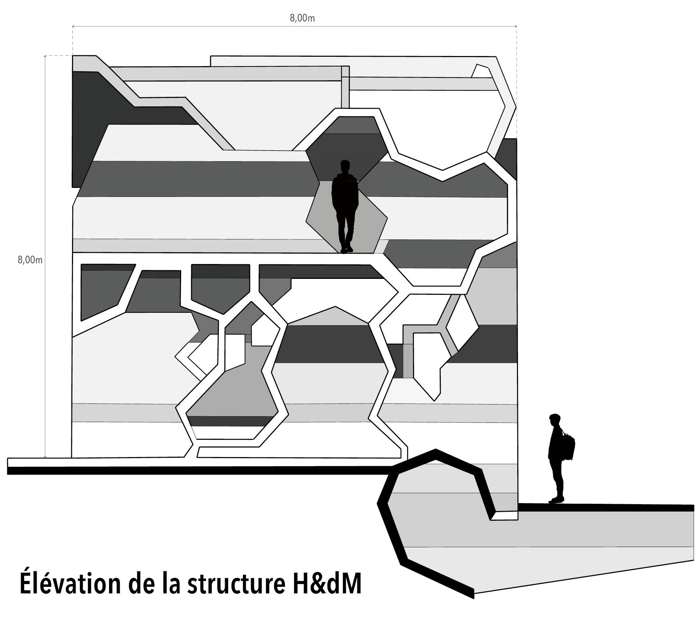
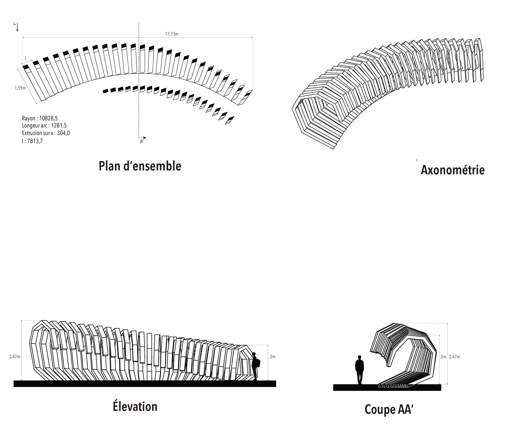
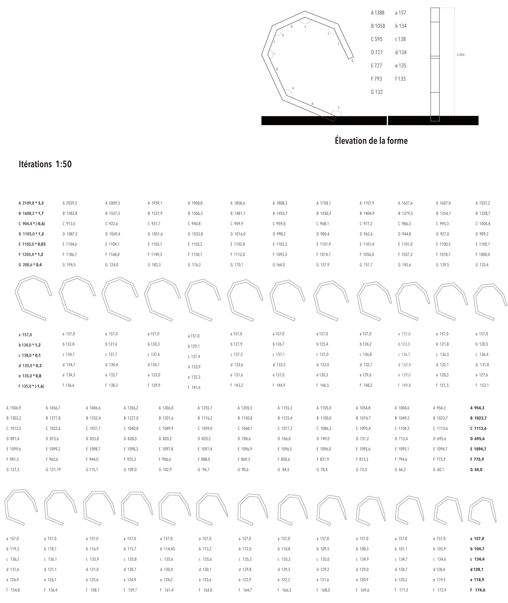

VOL.06

The reading Space
Projet d’un tunel
Ce projet propose un espace de lecture installé dans un environnement paysager, en s’inspirant des structures organiques et des postures multiples du corps au repos.
L’intervention développe une forme continue, à la fois assise, abri et seuil, capable d’accueillir des usages variés : s’adosser, s’asseoir, s’allonger, lire ou traverser.
Le projet explore ainsi la relation entre structure répétitive, échelle du corps et expérience sensible, en transformant un simple dispositif en micro-architecture habitée.


